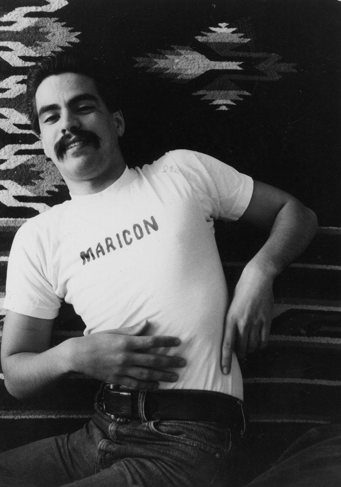
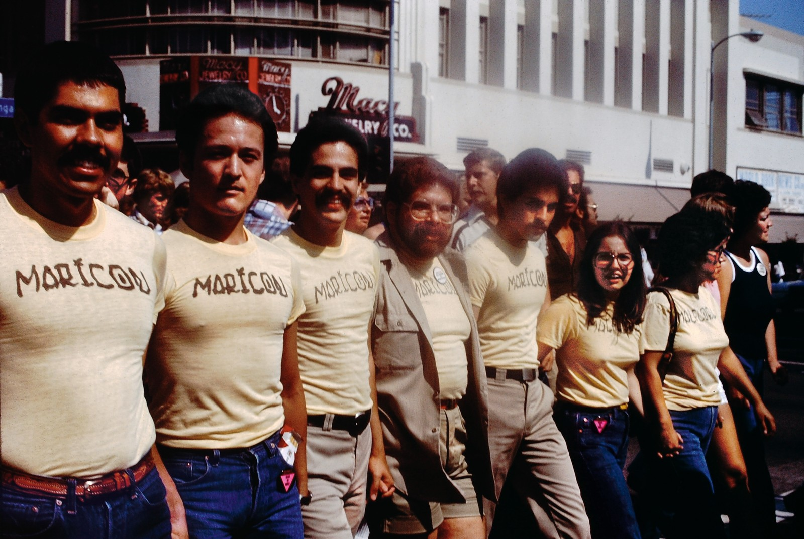
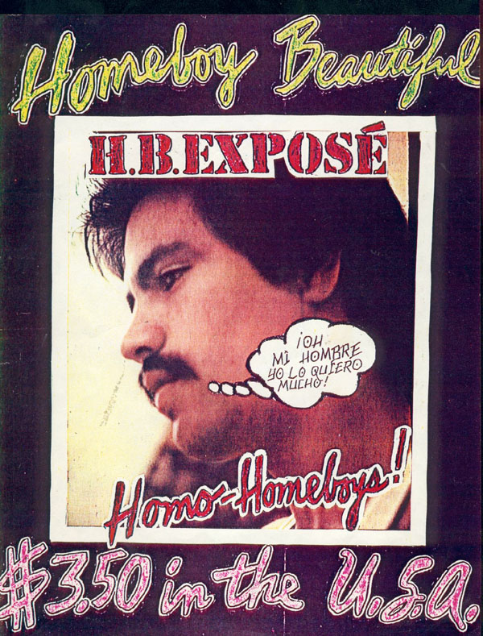

Participants in the Christopher Street West pride parade wearing Joey Terrill and Teddy Sandoval's Maricon and Malflora shirts, 1976.
Teddy Sandoval, (b. 1949, Los Angeles; d. 1995, Los Angeles),
Joey Terrill wearing his maricon T-shirt, 1975. Courtesy of Joey Terrill.
Joey Terrill, Homebody Beautiful no.1, 1978, Self-published magazine, 11 x 8½in. ONE National Gay & Lesbian Archives at the USC Libraries.